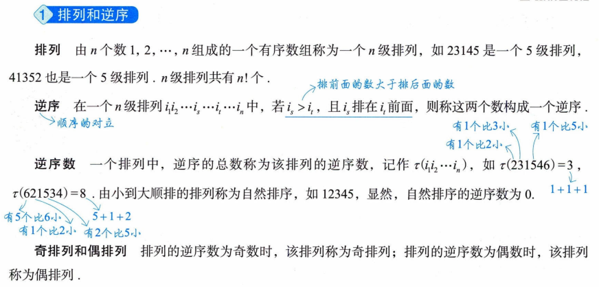
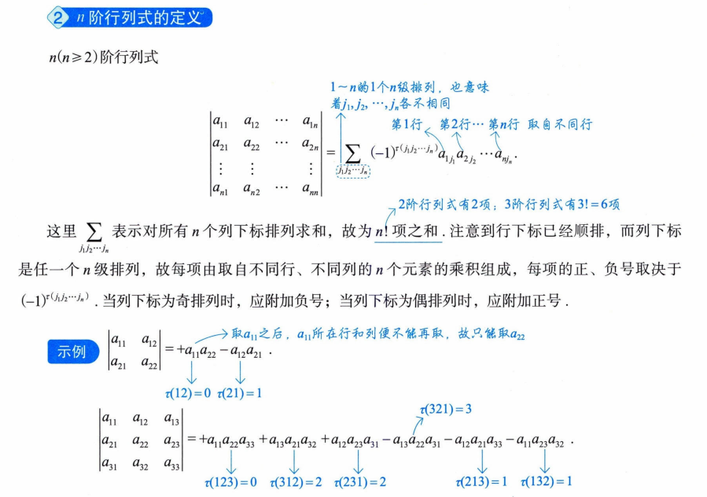
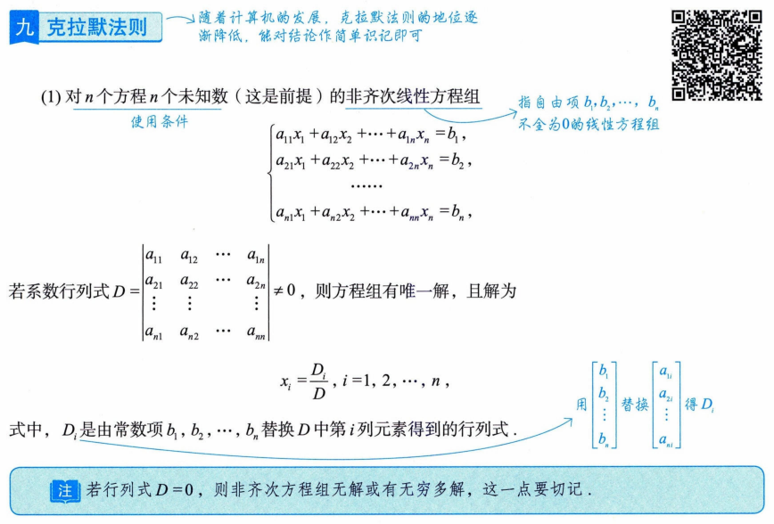
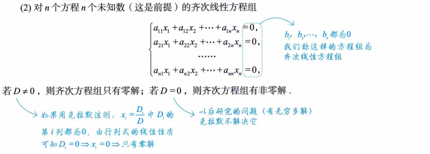
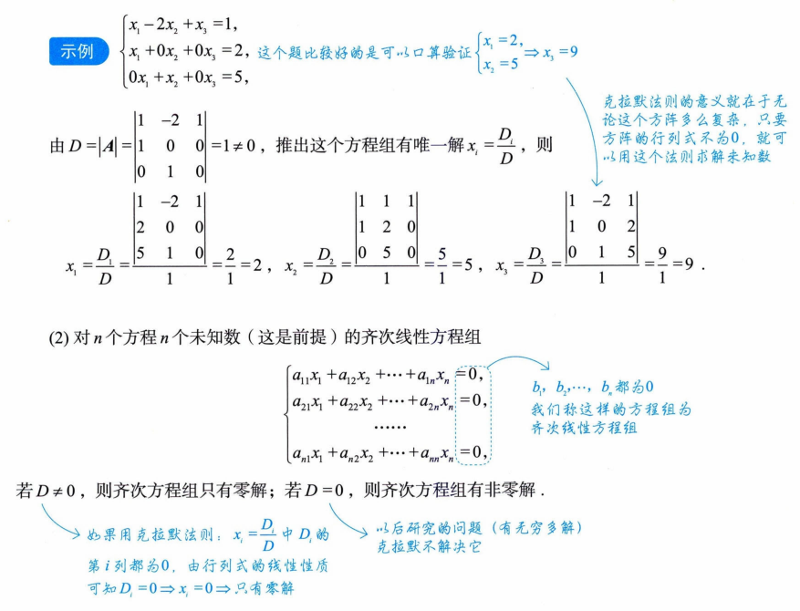
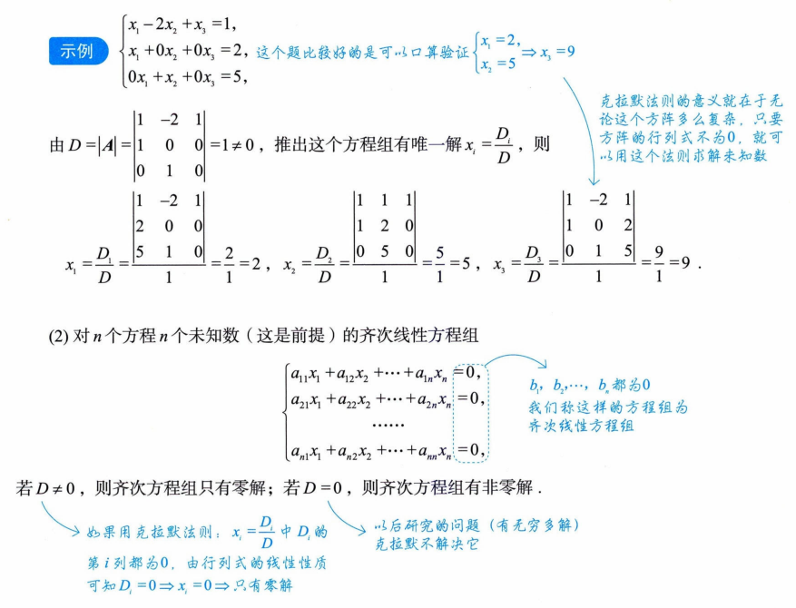
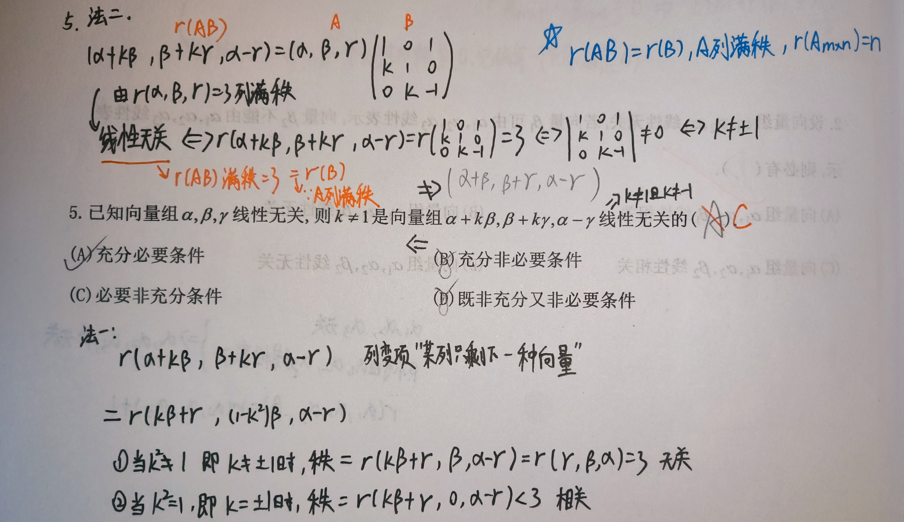
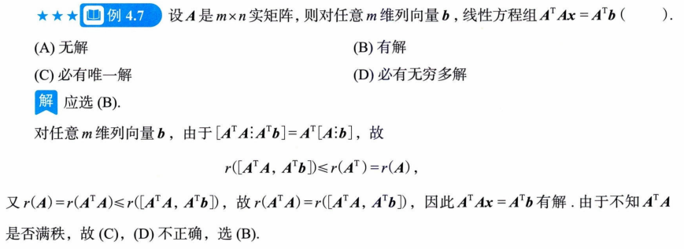
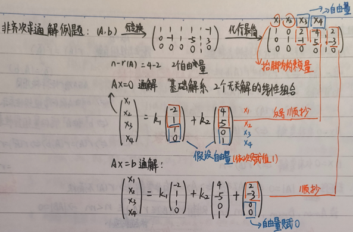

考研数二—线代笔记¶
一、行列式¶
1. $ f(x) = x^n + a_{n-1}x^{n-1} + \cdots + a_1x + a_0 $¶
若 $ f(x) = x^n + a_{n-1}x^{n-1} + \cdots + a_1x + a_0 $ 为 n 次函数，则 $ f(x)=0 $ 的 n 个实根分别记为 $ x_1, x_2, \cdots, x_n $，则必有 $ \sum_{i=1}^{n} x_i = -a_{n-1} $
例: $ a, b, c $ 是 $ x^3 - 2x + 4 = 0 $ 的三个根，则 $ x^3 - 0x^2 - 2x + 4 = 0 \(，\) a+b+c = -0 = 0 $
2. 求行列式（含 x）展开式中的常数项，直接令行列式中 $ x=0 $，直接求值即得。¶
3. 行列式性质¶
① $ |A| = |A^T| $，行列互换，其值不变
② 某行(列)元素全为 0，行列式为 0
③ 单行可提性，可将公因子 $ k (k \neq 0) $ 提出 $$ \begin{vmatrix} x & a_1 & b_1 \ x & a_2 & b_2 \ x & a_3 & b_3 \ \end{vmatrix} = x \cdot \begin{vmatrix} 1 & a_1 & b_1 \ 1 & a_2 & b_2 \ 1 & a_3 & b_3 \ \end{vmatrix}, \quad \begin{vmatrix} \frac{1}{3} & \frac{2}{3} \ \frac{1}{3} & \frac{5}{3} \ \end{vmatrix} = \frac{1}{3} \begin{vmatrix} 1 & 2 \ 1 & 5 \ \end{vmatrix} $$
④ 单行(列)可拆性， $$ \begin{vmatrix} a_{11} & a_{12} & a_{13} \ a_{21}+b_1 & a_{22}+b_2 & a_{23}+b_3 \ a_{31} & a_{32} & a_{33} \ \end{vmatrix} = \begin{vmatrix} a_{11} & a_{12} & a_{13} \ a_{21} & a_{22} & a_{23} \ a_{31} & a_{32} & a_{33} \ \end{vmatrix} + \begin{vmatrix} a_{11} & a_{12} & a_{13} \ b_1 & b_2 & b_3 \ a_{31} & a_{32} & a_{33} \ \end{vmatrix} $$
注意逆用
⑤ 两行(列)换号，行列式变号
⑥ 两行成比例，行列式值为 0
⑦ 将某行(列)的 k 倍加到另一行(列)，行列式不变
4. 余子式、代数余子式¶
余子式: 去掉 $ a_{ij} $ 所在行列后拼起来的 (n-1) 阶行列式，记作 $ M_{ij} $
代数余子式: 记作 $ A_{ij} = (-1)^{i+j} M_{ij} $
行列式展开公式: 行列式等于行列式的某行(列)元素分别相乘其相应代数余子式求和 但行列式某行(列)元素分别乘以另一行(列)元素的代数余子式后再求和结果为 0。 $$ |A| = a_{i1}A_{i1} + a_{i2}A_{i2} + \cdots + a_{in}A_{in} = \sum_{j=1}^{n} a_{ij}A_{ij} \quad (i=1,2,\cdots,n) $$
例如求解: $$ M_{31} + 3M_{32} - 2M_{33} + 2M_{34} = 1 \cdot \underbrace{(-1)^4 M_{31}}{A}} - 3 \cdot \underbrace{(-1)^5 M_{32}{A}} - 2 \cdot \underbrace{(-1)^6 M_{33}{A}} - 2 \cdot \underbrace{(-1)^7 M_{34}{A $$}
将 $ A_{3j} $ 对应系数，替换原 $ |A| $ 相应值，再求行列式值。
5. 主对角行列式¶
主对角行列式的值等于主对角线上所有元素的乘积： $$ \begin{vmatrix} a_{11} & & & \ & a_{22} & & \ & & \ddots & \ & & & a_{nn} \ \end{vmatrix} = \prod_{i=1}^{n} a_{ii} $$
副对角行列式 $$ \begin{vmatrix} & & & a_{1,n} \ & & a_{2,n-1} & \ & \cdots & & \ a_{n,1} & & & \ \end{vmatrix} = (-1)^{\frac{n(n-1)}{2}} a_{1n} \cdot a_{2,n-1} \cdots a_{n1} $$
注: 副对角线元素相乘再乘 \((-1)^{\frac{n(n-1)}{2}}\)，以上公式对于三角阵同样成立。
拉普拉斯展开式
设 A 为 m 阶矩阵，B 为 n 阶矩阵，则有： $$ \begin{vmatrix} A & O \ O & B \ \end{vmatrix} = \begin{vmatrix} A & C \ O & B \ \end{vmatrix} = \begin{vmatrix} A & O \ C & B \ \end{vmatrix} = |A||B| $$ $$ \begin{vmatrix} O & A \ B & O \ \end{vmatrix} = \begin{vmatrix} C & A \ B & O \ \end{vmatrix} = \begin{vmatrix} O & A \ B & C \ \end{vmatrix} = (-1)^{mn} |A||B| \quad \star $$
范德蒙德行列式 $$ \begin{vmatrix} 1 & 1 & \cdots & 1 \ x_1 & x_2 & \cdots & x_n \ x_1^2 & x_2^2 & \cdots & x_n^2 \ \vdots & \vdots & \ddots & \vdots \ x_1^{n-1} & x_2^{n-1} & \cdots & x_n^{n-1} \ \end{vmatrix} = \prod_{1 \le i < j \le n} (x_j - x_i) $$
关键行: 行列式值为第二行后一项减前一项的所有项的乘积。 （第一行为 \(x^0\)，即常数1；后续行依次为 \(x^1, x^2, ..., x^{n-1}\)）
6. 排序和逆序、\(n\) 阶行列式的定义¶


7. 克拉默法则¶
 

二、矩阵¶
1. 同型矩阵可相加¶
$ C = A + B = (a_{ij}){m \times n} + (b){m \times n} = (c $})_{m \times n
即对应元素相加
2. 数乘矩阵¶
$ kA = Ak = (ka_{ij})_{m \times n} $
即 A 的每个元素都乘以 k。
3. 运算法则¶
- 加法交换律: $ A + B = B + A $
- 加法结合律: $ (A + B) + C = A + (B + C) $
- 数乘分配律: $ k(A + B) = kA + kB $, $ (k + l)A = kA + lA $
- 数乘结合律: $ k(lA) = (kl)A = (lk)A $
矩阵相乘: $ c_{ij} = \sum_{k=1}^{s} a_{ik} b_{kj} = a_{i1}b_{1j} + a_{i2}b_{2j} + \cdots + a_{is}b_{sj} \quad (i=1,2,\cdots,m; j=1,2,\cdots,n) $
转置 (行列互换): * $ (AT)T = A $ * $ (kA)^T = kA^T $ * $ (A + B)^T = A^T + B^T $ * $ (AB)^T = B^T \cdot A^T $ * 结合律: $ (AB)C = A(BC) $ * 分配律: $ A(B + C) = AB + AC $ * 数乘结合律: $ (kA)B = A(kB) = k(AB) $
注意: 一般地，$ AB \neq BA $
行列式相关性质: * $ |kA| = k^n |A| \neq k|A| $
一般地, $ |A + B| \neq |A| + |B| $ * $ A \neq O \not\Rightarrow |A| \neq 0 $ * $ A \neq B \not\Rightarrow |A| \neq |B| $ * $ |A^T| = |A| $ * 设 A, B 是同阶方阵，则 $ |AB| = |A||B| $
对称矩阵与反对称矩阵: * 对称矩阵: $ A^T = A $ * 反对称矩阵: $ A^T = -A $
4. 主对角线结论¶
对于主对角线上元素为 \(1, -1, 2\) 的矩阵： $$ \begin{pmatrix} 1 & & \ & -1 & \ & & 2 \ \end{pmatrix}^{13} = \begin{pmatrix} 1^{13} & & \ & (-1)^{13} & \ & & 2^{13} \ \end{pmatrix} $$
其余情况踏踏实实找规律
5. 特殊矩阵的幂¶
-
对于上三角或下三角矩阵，其幂运算通常保持三角形式。 $$ A = \begin{pmatrix} 1 & 1 & 1 \ 0 & 1 & 1 \ 0 & 0 & 1 \ \end{pmatrix} \Rightarrow A^{-1} = \begin{pmatrix} 1 & -1 & 0 \ 0 & -1 & -1 \ 0 & 0 & 1 \ \end{pmatrix} $$
-
严格三角阵的幂: 例如一个 3 阶严格上三角矩阵的平方： $$ \begin{pmatrix} 0 & 1 & 2 \ 0 & 0 & 3 \ 0 & 0 & 0 \ \end{pmatrix}^2 = \begin{pmatrix} 0 & 0 & 3 \ 0 & 0 & 0 \ 0 & 0 & 0 \ \end{pmatrix} $$
注：此处 \(3 = 1 \times 3\)，直观表现为上三角矩阵的各元素往右上角移动，此处示例矩阵的三次方为 0 。
6. 逆矩阵¶
若存在矩阵 B，使得 $ AB = BA = E $，则称 A 可逆，并记 $ A^{-1} = B \(，\) B^{-1} = A $。
★ A 可逆的充分必要条件是 $ |A| \neq 0 $
$ |A| \neq 0 \iff A \text{ 可逆} $
若 A, B 为同阶可逆方阵，则有: * $ (A{-1}) = A $ * 若 $ k \neq 0 $，则 $ (kA)^{-1} = \frac{1}{k} A^{-1} $ * $ AB $ 可逆，$ (AB)^{-1} = B{-1}A $ (穿脱原则) * $ A^T $ 可逆，$ (AT) = (A{-1})T $ * $ |A^{-1}| = |A|^{-1} $
求解 $ A^{-1} $ 的方法: ① 定义法: $ AB = E $，则 $ A^{-1} = B $ ② 公式法: $ A^{-1} = \frac{A^}{|A|} $ (其中 $ A^ $ 为 A 的伴随矩阵) ③ 初等行变换法: 将矩阵 $ (A, E) $ 通过初等行变换化为 $ (E, A^{-1}) $
只能作行变换。 或者，将矩阵 $ \begin{pmatrix} A \ E \end{pmatrix} $ 通过初等列变换化为 $ \begin{pmatrix} E \ A^{-1} \end{pmatrix} $ 只能作列变换。
7. 伴随矩阵 $ A^* $¶
伴随矩阵 $ A^ $ 的定义为： $$ A^ = \begin{bmatrix} A_{11} & A_{21} & \cdots & A_{n1} \ A_{12} & A_{22} & \cdots & A_{n2} \ \vdots & \vdots & \ddots & \vdots \ A_{1n} & A_{2n} & \cdots & A_{nn} \ \end{bmatrix} $$ 其中，$ A_{ij} = (-1)^{i+j} M_{ij} $ 是元素 $ a_{ij} $ 的代数余子式。
注: A 的第 i 行元素的代数余子式写在 $ A^* $ 的第 i 列上。
核心性质: * $ AA^ = A^A = |A| \cdot E $ * $ |A^| = |A|^{n-1} $ * $ (A*) = |A|^{n-2} A $
当 $ |A| \neq 0 $ 时 (即 A 可逆): * $ A^ = |A| \cdot A^{-1} $ * $ A = |A| \cdot (A*) $ * $ A^{-1} = \frac{A^}{|A|} $
其他重要公式1:
- $ (kA)(kA)^* = |kA| \cdot E $
- $ (AT)(AT)^* = |A^T| \cdot E $
- $ (A{-1})(A| \cdot E $})^* = |A^{-1
- $ (A*)(A)^ = |A^*| \cdot E $
其他重要公式2:
- $ (AB)^ = B^ A^* $
- $ (kA)^ = k^{n-1} A^ $
- $ (AT)* = (A*)T $
- $ (A{-1})* = (A*) $
其他重要公式3:
- $ (kA)^{-1} = \frac{1}{k} A^{-1} $
- $ (kA)^{T} = kA^{T} $
- \(|kA| = k^n|A|\)
- $ |B^{-1}| = |B|^{-1} $
- $ C \cdot C^ = |C| \cdot E \implies C^ = |C| \cdot C^{-1} $
注意: $ (A+B)^ \neq A^ + B^* $
8. 简单分块矩阵的逆¶
若 A, B 可逆，则有： $$ \begin{bmatrix} A & O \ O & B \ \end{bmatrix}^{-1} = \begin{bmatrix} A^{-1} & O \ O & B^{-1} \ \end{bmatrix}, \quad \begin{bmatrix} O & A \ B & O \ \end{bmatrix}^{-1} = \begin{bmatrix} O & B^{-1} \ A^{-1} & O \ \end{bmatrix} $$
副对角线需换位
分块矩阵行列式 (设 A 为 m 阶，C 为 n 阶): * $ \begin{vmatrix} A_m & B \ O & C_n \end{vmatrix} = |A| \cdot |C| $ * $ \begin{vmatrix} B & A_m \ C_n & O \end{vmatrix} = (-1)^{mn} |A| \cdot |C| $ * $ |ABC| = |A| \cdot |B| \cdot |C| $
9. 二阶矩阵，求伴随，主对换，副反号¶
对于二阶矩阵 $ A = \begin{bmatrix} a & b \ c & d \end{bmatrix} $，其伴随矩阵为 $ A^* = \begin{bmatrix} d & -b \ -c & a \end{bmatrix} $。
口诀: 主对角线元素互换，副对角线元素变号。
10. 初等矩阵 / 初等变换 (倍乘、互换、倍加)¶
变换法则: 左行右列 * $ E_2(k) $ — 第 2 行乘 k 倍 * $ E_{12} $ — 第 1, 2 行互换 * $ E_{31}(k) $ — 第 1 行 k 倍加到第 3 行
初等矩阵的性质: ① 初等矩阵的转置仍是初等矩阵: $ E_{ij}^T = E_{ij} $, $ E_i^T(k) = E_i(k) \(，\) E_{ij}^T(k) = E_{ji}(k) $ ② 初等矩阵的逆:
- $ E_{ij}^{-1} = E_{ij} $
- $ E_i^{-1}(k) = E_i(\frac{1}{k}) $
- $ E_{ij}^{-1}(k) = E_{ij}(-k) $
11. 可逆矩阵与秩¶
- 可逆矩阵可以表示为有限个初等矩阵的乘积；任何可逆矩阵 P，可以拆解成若干初等阵乘积。
- 若 $ |A| \neq 0 $ (即 A 满秩可逆)，则可逆矩阵 \(A\) 乘以其他矩阵不改变其秩。
初等变换不改变矩阵的秩
12. 矩阵等价¶
定义: 矩阵 A 与 B 等价，记作 $ A \sim B $，是指 A 经过有限次初等变换可以化为 B。
充要条件: $ r(A) = r(B) $
13. 秩的性质 (乘积为零)¶
若 $ A_{m \times n} \cdot B_{n \times s} = O $，则有： $$ r(A) + r(B) \le n $$
注: 此处的 $ n $ 是矩阵 A 的列数（也是矩阵 B 的行数）。
14. 秩的性质 (与初等变换相关)¶
- $ r(A \cdot B) \le r(A) $
- 若 P 可逆，则 $ r(P \cdot A) = r(A) $
解释: 对于 $ A \cdot B = C $，C 的列向量可以由 A 的列向量线性表示，C 的行向量可以由 B 的行向量线性表示。
15. 正交矩阵¶
定义: 若方阵 A 满足 $ AA^T = A^TA = E $，则称 A 为正交矩阵。 * 等价于 $ A^{-1} = A^T $ * 等价于 A 的行（列）向量都是单位向量，且行（列）向量两两正交。
注: 对于一个单位行向量 $ (a_1, a_2, \cdots, a_n) $，有 $ a_1^2 + a_2^2 + \cdots + a_n^2 = 1 $。
16. 方阵的多项式运算¶
方阵的多项式可以像数一样相乘和因式分解。 例: 设 A 为 n 阶矩阵，则： $$ (A - E)^5 = A^5 - 5A^4 + 10A^3 - 10A^2 + 5A - E \neq O $$ 可以进行因式分解： $$ = A(A^4 - 5A^3 + 10A^2 - 10A + 5E) = E $$
注: 此处推导结果为 E，表明 $ A $ 与括号内的多项式互为逆矩阵。
17. 幂等矩阵¶
$ A^2 = A $ 不能推出 $ A = E $。
反例: 零矩阵 $ O $ 和某些非单位的投影矩阵都满足 $ A^2 = A $。
18. 零矩阵的判定¶
一个矩阵的秩为 0，它的每一个元素都为 0。(显而易见)
19. 秩的综合性质¶
伴随矩阵的秩: 对于 n 阶矩阵 A，其伴随矩阵 $ A^ $ 的秩为： $$ r(A^) = \begin{cases} n & \iff r(A) = n \ 1 & \iff r(A) = n-1 \ 0 & \iff r(A) < n-1 \ \end{cases} $$
推论: $ r(A_{n \times n}) = n \iff |A| \neq 0 \iff A \text{ 可逆} $
其他重要不等式与等式: * $ r(kA) = r(A) $，其中 $ k \neq 0 $ * $ r(A) \le r(A, b) $，其中 $ (A, b) $ 为 A 的增广矩阵 * $ r(AB) \le \min{r(A), r(B)} $ * $ r(A + B) \le r(A) + r(B) $ * $ r(A) = r(PA) = r(AQ) = r(PAQ) $，其中 P, Q 为可逆矩阵 * $ r(A^T) = r(A) = r(A^TA) = r(A \cdot A^T) $
再次强调: 若 $ A_{m \times n} \cdot B_{n \times s} = O $，则 $ r(A) + r(B) \le n $。
注: 此处的 \(n\) 是矩阵 A 的列数（也是矩阵 B 的行数）。
三、向量组¶
1. 内积与正交¶
设 $ \alpha = [\alpha_1, \alpha_2, \cdots, \alpha_n]^T $, $ \beta = [b_1, b_2, \cdots, b_n]^T $。 * 内积: $ (\alpha, \beta) = \alpha^T \beta = \sum_{i=1}^{n} a_i b_i = a_1b_1 + a_2b_2 + \cdots + a_nb_n $ * 正交向量: 若 $ \alpha^T \beta = 0 $，则称 $ \alpha, \beta $ 为正交向量。 * 模 (长度): $ ||\alpha|| = \sqrt{\sum_{i=1}^{n} a_i^2} $。当 $ ||\alpha|| = 1 $ 时，$ \alpha $ 为单位向量。
正交矩阵: $ A^T \cdot A = E \iff A^T = A^{-1} $
- 标准正交向量组: 若向量组 $ \alpha_1, \alpha_2, \cdots, \alpha_s $ 中任意两个向量都正交，且每个向量都是单位向量，则称其为标准正交向量组。
- 即满足：$ \alpha_i^T \alpha_j = \begin{cases} 0, & i \neq j \ 1, & i = j \end{cases} $
- 即\((\alpha_i, \alpha_j) = 0\)，\(i \neq j\) \(\iff\) \(\alpha_i\)与\(\alpha_j\)正交
2. 向量组的线性无关性¶
若 $ \alpha_1, \alpha_2, \alpha_3 $ 线性无关，且 $ \beta $ 不可由 $ \alpha_1, \alpha_2, \alpha_3 $ 线性表示，则 $ \alpha_1, \alpha_2, \alpha_3, \beta $ 线性无关。 * 此时，秩的关系为：$ r(\alpha_1, \alpha_2, \alpha_3, \beta) = r(\alpha_1, \alpha_2, \alpha_3) + 1 $
3. 秩的性质¶
若矩阵 A 列满秩（即 $ r(A_{m \times n}) = n $），则对于任意矩阵 B，有 $ r(AB) = r(B) $。
PS: 《1000题》3-5 题考察此知识点，用于证明向量组是否线性无关或可逆
4. 判断向量组的线性相关性¶
判断向量组 $ \alpha_1, \alpha_2, \cdots, \alpha_n $ 的线性相关性： * 秩满，线性无关: $ r(\alpha_1, \alpha_2, \cdots, \alpha_n) = n \iff \alpha_1, \alpha_2, \cdots, \alpha_n $ 线性无关。 * 秩不满，线性相关: $ r(\alpha_1, \alpha_2, \cdots, \alpha_n) < n \iff \alpha_1, \alpha_2, \cdots, \alpha_n $ 线性相关。
5. 向量组等价¶
向量组 $ \langle I \rangle $ 与 $ \langle II \rangle $ 等价，是指它们可以互相线性表示。
- 设向量组 $ \alpha_1, \alpha_2, \cdots, \alpha_s $ 和 $ \beta $，则：
- $ r(\alpha_1, \alpha_2, \cdots, \alpha_s, \beta) = r(\alpha_1, \alpha_2, \cdots, \alpha_s) = s \iff \beta $ 可由 $ \alpha_1, \alpha_2, \cdots, \alpha_s $ 线性表示，且表示法唯一。
- $ r(\alpha_1, \alpha_2, \cdots, \alpha_s, \beta) = r(\alpha_1, \alpha_2, \cdots, \alpha_s) < s \iff \beta $ 可由 $ \alpha_1, \alpha_2, \cdots, \alpha_s $ 线性表示，但表示法不唯一。
- $ r(\alpha_1, \alpha_2, \cdots, \alpha_s) < r(\alpha_1, \alpha_2, \cdots, \alpha_s, \beta) \iff \beta $ 不可由 $ \alpha_1, \alpha_2, \cdots, \alpha_s $ 线性表示。
6. 两向量组等价的判定¶
向量组 $ \alpha_1, \alpha_2, \alpha_3 $ 与 $ \beta_1, \beta_2, \beta_3 $ 等价，当且仅当： $$ r(\alpha_1, \alpha_2, \alpha_3) = r(\beta_1, \beta_2, \beta_3) = r(\alpha_1, \alpha_2, \alpha_3, \beta_1, \beta_2, \beta_3) $$
大题解法: 写出增广矩阵 $ (A, B) $，验证 $ r(A) = r(A, B) $，并单独验证 $ r(B) $，确保三个秩相等。
7. 施密特正交化¶
若向量组 $ \alpha_1, \alpha_2, \alpha_3 $ 线性无关，则可通过施密特正交化方法构造一组两两正交的向量组 $ \beta_1, \beta_2, \beta_3 $，且新向量组与原向量组等价。 * 公式: * $ \beta_1 = \alpha_1 $ * $ \beta_2 = \alpha_2 - \frac{(\alpha_2, \beta_1)}{(\beta_1, \beta_1)} \cdot \beta_1 $ * $ \beta_3 = \alpha_3 - \frac{(\alpha_3, \beta_1)}{(\beta_1, \beta_1)} \cdot \beta_1 - \frac{(\alpha_3, \beta_2)}{(\beta_2, \beta_2)} \cdot \beta_2 $
PS: 线性无关向量组经过施密特正交规范化后，结果不唯一（因为正交化过程中可以选择不同的顺序或归一化方式）。
8. 零向量组的性质¶
零向量组必然可以被其余任何向量组线性表示。
四、线性方程组¶
1. 非齐次线性方程组 $ Ax = b $ ($ b \neq 0 $)¶
有解判定: 线性方程组有解 $ \iff r(A) = r(\bar{A}) $
注: $ \bar{A} = (A, b) $ 为增广矩阵。
解的情况: * 唯一解: $ \iff r(A) = r(A, b) = n $ （n 为未知量个数，即 A 的列数） * 无穷多解: $ \iff r(A) = r(A, b) < n $ * 无解: $ \iff r(A) < r(A, b) $ （矛盾方程）
几何意义/向量解释: * $ r(A) = r(A, b) \iff b $ 可由 A 的列向量组线性表示。 * $ r(A) = r(A, b) \iff b^T $ 可由 $ A^T $ 的行向量组线性表示。 * \(\quad r(A) = r(A, b) \quad \Leftrightarrow \quad r(A^T) = r\begin{pmatrix} A^T \\ b^T \end{pmatrix}\)
2. 齐次线性方程组 $ Bx = 0 $¶
非零解: $ Bx = 0 $ 有非零解 $ \iff r(B) < n $ （n 为未知量个数，即 B 的列数）
注: 此时有效方程个数$ r(B) $小于未知量个数。
仅有零解: $ Bx = 0 $ 仅有零解 $ \iff r(B) = n $
3. 方阵行列式与可逆性¶
对于方阵 A，有： $$ |A| = 0 \iff A \text{ 不可逆} \iff Ax=0 \text{ 有非零解} \iff r(A) \text{ 不满秩} $$
推论: 设 $ A_{m \times n}, B_{n \times m} $，若 $ m > n $，则有 $ r(AB) \le r(A) \le n < m \implies |AB| = 0 $
注: 秩越乘越小。
4. 非齐次方程通解¶
非齐次线性方程组的通解 = 非齐次方程的一个特解 + 对应齐次方程组的通解。
重要性质: 非齐次方程的两个特解之差，必为对应齐次方程组的解。
5. 齐次线性方程组解的条件与结构¶
设 $ A_{m \times n} x = 0 $。
解的情况: ① 当 $ r(A) = n $（即 A 的列向量线性无关）时，方程组有唯一零解。 ② 当 $ r(A) = r < n $（即 A 的列向量线性相关）时，方程组有无穷多解，且基础解系包含 $ n - r $ 个线性无关的解向量。
自由度: $ n - r $ 是“真实的约束个数”的补集。
基础解系: 设 $ \xi_1, \xi_2, \cdots, \xi_{n-r} $ 满足： ① $ A\xi_i = 0 $ （是解） ② $ \xi_1, \xi_2, \cdots, \xi_{n-r} $ 线性无关 ③ $ Ax=0 $ 的任意解均可由 $ \xi_1, \xi_2, \cdots, \xi_{n-r} $ 线性表示 则称 $ \xi_1, \xi_2, \cdots, \xi_{n-r} $ 为 $ Ax=0 $ 的基础解系。
注: 基础解系中向量的个数 $ s = n - r(A) $。
6. 解的线性无关性¶
$ Ax = b $ 有 s 个线性无关解 $ \iff Ax = 0 $ 有 s-1 个线性无关解。
$ Ax = b $ 无关解向量个数为 \(n-r(A)+1\)
例: 设 $ \alpha_1, \alpha_2, \alpha_3 $ 是 $ Ax=b $ 的 3 个线性无关解，则 $ \alpha_1 - \alpha_2, \alpha_2 - \alpha_3 $ 是 $ Ax=0 $ 的 2 个线性无关解。
7. 解向量的正交性¶
向量 $ x = \begin{pmatrix} x_1 \ \vdots \ x_n \end{pmatrix} $ 是齐次线性方程组 $ Ax=0 $ 的解 $ \iff x $ 与 A 的任一行向量正交。
8. $ A^TAx = 0 $ 与 $ Ax = 0 $ 同解¶
PS: 证明见《30讲》习题 4.8。


9. 求解齐次线性方程组的通解¶
求解 $ Ax=0 $ 的通解，需要找到其基础解系，即寻找满足以下三个条件的 s 个向量： ① 是 $ Ax=0 $ 的解 ② 线性无关 ③ $ s = n - r(A) $ （个数等于自由变量的个数）
10. 非齐次方程组求通解¶
步骤: 对增广矩阵 $ (A, b) $ 进行初等行变换，化为行最简形。
示例: $$ (A, b) \xrightarrow{\text{行变换}} \begin{pmatrix} 1 & 1 & 1 & 1 & -1 \ 0 & -1 & 1 & 5 & 3 \ 0 & 0 & 0 & 0 & 0 \end{pmatrix} \xrightarrow{\text{化行最简}} \begin{pmatrix} 1 & 0 & 2 & -4 & 2 \ 0 & 1 & -1 & 5 & -3 \ 0 & 0 & 0 & 0 & 0 \end{pmatrix} $$
- 自由变量个数: $ n - r(A) = 4 - 2 = 2 $ 个自由变量。
- 约束变量: 抬脚（主元）对应的变量 $ x_1, x_2 $。
- 自由变量: $ x_3, x_4 $。
求解过程:
-
求对应齐次方程组 $ Ax=0 $ 的通解:
- 将自由变量 $ x_3, x_4 $ 依次赋值 $ (1, 0) $ 和 $ (0, 1) $，得到基础解系。
- 解得： $$ \begin{pmatrix} x_1 \ x_2 \ x_3 \ x_4 \end{pmatrix} = k_1 \begin{pmatrix} -2 \ 1 \ 1 \ 0 \end{pmatrix} + k_2 \begin{pmatrix} 4 \ -5 \ 0 \ 1 \end{pmatrix} $$
-
求非齐次方程组 $ Ax=b $ 的一个特解:
- 将自由变量 $ x_3, x_4 $ 赋值为 0。
- 解得特解为： $$ \begin{pmatrix} 2 \ -3 \ 0 \ 0 \end{pmatrix} $$
-
写出通解:
- 非齐次方程组的通解 = 特解 + 齐次方程组的通解。
- 最终通解为： $$ \begin{pmatrix} x_1 \ x_2 \ x_3 \ x_4 \end{pmatrix} = k_1 \begin{pmatrix} -2 \ 1 \ 1 \ 0 \end{pmatrix} + k_2 \begin{pmatrix} 4 \ -5 \ 0 \ 1 \end{pmatrix} + \begin{pmatrix} 2 \ -3 \ 0 \ 0 \end{pmatrix} $$

技巧: 在写解向量时，“反号顺抄”指从行最简形中抄写系数时注意符号；“顺抄”指直接抄写特解部分。
10. 初等行变换的性质¶
初等行变换不改变矩阵列向量间的线性关系。 * 若 $ A \xrightarrow{r} B $，则方程组 $ Ax=0 $ 与 $ Bx=0 $ 同解。
11. 每行元素之和为常数类型¶
若 A 为 n 阶矩阵，且其每行元素之和均为常数 $ \lambda $，则 $ \lambda $ 是 A 的一个特征值，对应的特征向量为 $ \begin{pmatrix} 1 \ 1 \ \vdots \ 1 \end{pmatrix} $。
证明: $ A \begin{pmatrix} 1 \ 1 \ \vdots \ 1 \end{pmatrix} = \begin{pmatrix} \sum a_{i1} \ \sum a_{i2} \ \vdots \ \sum a_{in} \end{pmatrix} = \begin{pmatrix} \lambda \ \lambda \ \vdots \ \lambda \end{pmatrix} = \lambda \begin{pmatrix} 1 \ 1 \ \vdots \ 1 \end{pmatrix} $
12. 方程组同解与向量组等价的关系¶
- 齐次方程组: $ Ax=0 $ 与 $ Bx=0 $ 同解 $ \iff A \xrightarrow{r} B $ （即 A 经过初等行变换可化为 B）$ \iff A, B $ 的行向量组等价。
- 转置方程组: $ A^Tx=0 $ 与 $ B^Tx=0 $ 同解 $ \iff A^T \xrightarrow{r} B^T $ $ \iff A, B $ 的列向量组等价 $ \iff A^T, B^T $ 的行向量组等价。
- 非齐次方程组: $ Ax=\alpha $ 与 $ Bx=\beta $ 同解 $ \iff (A, \alpha) \xrightarrow{r} (B, \beta) $。
- 特殊情形: 若 $ Ax=0 $ 与 $ \begin{pmatrix} A \ \beta^T \end{pmatrix} x = 0 $ 同解，则 $ \beta^T $ 可由 A 的行向量线性表示 $ \iff \beta $ 可由 $ A^T $ 的列向量线性表示 $ \iff r(A^T) = r(A^T, \beta) $ 即$ A^Tx=\beta $有解。
五、特征值与特征向量¶
1. 定义与求解方法¶
- 定义: $ (\lambda E - A) \xi = 0 $ 或 $ A\xi = \lambda \xi $。
- 求解步骤:
- 先求特征值：解特征方程 $ |\lambda E - A| = 0 $，得到特征值 $ \lambda $。
- 再求特征向量：对每个特征值 $ \lambda $，解齐次线性方程组 $ (\lambda E - A)x = 0 $，得到其非零解，即为对应的特征向量。
2. 特征向量的性质¶
不同特征值所对应的特征向量的线性组合，一般不是特征向量。
3. 特征向量的定义要求¶
特征向量必须是非零向量。
4. 矩阵运算对特征值和特征向量的影响¶
若 $ \alpha $ 是矩阵 A 的特征值 $ \lambda $ 对应的特征向量，则：
| 矩阵 | A | kA | $ A^k $ | f(A) | $ A^{-1} $ | $ A^* $ | $ P^{-1}AP $ | $ A^T $ |
|---|---|---|---|---|---|---|---|---|
| 特征值 | $ \lambda $ | $ k\lambda $ | $ \lambda^k $ | $ f(\lambda) $ | $ \frac{1}{\lambda} $ | $ \frac{ | A | }{\lambda} $ |
| 对应特征向量 | $ \alpha $ | $ \alpha $ | $ \alpha $ | $ \alpha $ | $ \alpha $ | $ \alpha $ | $ P^{-1}\alpha $ | / |
注: * 若 $ |A| \neq 0 $，则 A 与 $ A^* $ 的特征向量一一对应。 * \(A\boldsymbol{\xi} = \lambda \boldsymbol{\xi} \implies A^*\!A\boldsymbol{\xi} = A^*\!\lambda \boldsymbol{\xi} \implies |A|\boldsymbol{\xi} = \lambda A^*\boldsymbol{\xi} \implies \frac{|A|}{\lambda}\boldsymbol{\xi} = A^*\boldsymbol{\xi}\) * \(k\) 重特征值，至多有\(k\)个无关特征向量。 * 若 $ \xi_1 $ 是 A 的特征值 $ \lambda_1 $ 对应的特征向量，则对于任意 $ k \neq 0 \(，\) k\xi_1 $ 仍是对应于 $ \lambda_1 $ 的特征向量。
5. 特征向量的几何意义¶
A 对应特征值 $ \lambda $ 的特征向量 $ \Leftrightarrow (\lambda E - A)x = 0 $ 的非零解。 * 若 $ (\lambda E - A)x = 0 $ 有 2 个线性无关的解，则 $ n - r(\lambda E - A) = 2 $。
注: 此处的 \(n\) 是矩阵 A 的阶数（列数）。
6. 迹与行列式¶
- 迹 (trace): $ tr(A) = \lambda_1 + \lambda_2 + \cdots + \lambda_n $ （等于矩阵主对角线上元素之和）。
- 行列式: $ |A| = \lambda_1 \lambda_2 \cdots \lambda_n $。
7. 相似对角化¶
若存在可逆矩阵 P 和对角阵 $ \Lambda $，使得 $ P^{-1}AP = \Lambda $，则称 A 可相似对角化。 * 结论: 若 P 的各列是 A 的线性无关的特征向量，则 $ \Lambda $ 的对角元必是 A 的特征值，且 P 的列向量顺序与 $ \Lambda $ 的对角元顺序一一对应。 * 推导: $ P^{-1}AP = \Lambda \iff AP = P\Lambda $。设 $ P = (\alpha_1, \alpha_2, \alpha_3) \(，\) \Lambda = \text{diag}(\lambda_1, \lambda_2, \lambda_3) $，则： $$ A(\alpha_1, \alpha_2, \alpha_3) = (\alpha_1, \alpha_2, \alpha_3) \begin{pmatrix} \lambda_1 & & \ & \lambda_2 & \ & & \lambda_3 \end{pmatrix} \implies \begin{cases} A\alpha_1 = \lambda_1 \alpha_1 \ A\alpha_2 = \lambda_2 \alpha_2 \ A\alpha_3 = \lambda_3 \alpha_3 \end{cases} $$
8. 特征值的判定条件¶
$ \lambda $ 为 A 的特征值 $ \iff (\lambda E - A)x = 0 $ 有非零解 $ \iff |\lambda E - A| = 0 \iff r(\lambda E - A) < n $。
$ r(A) < n \iff |A| = 0 \(（\) \lambda_1 \lambda_2 \cdots \lambda_n =0\(）\) \iff $ \(A\) 不可逆$ \iff $ \(A\) 有 0 特征值
\(A\) 为 \(n\) 阶矩阵。
由特征方程 $ |\lambda E - A| = 0 $ 可知，由于|A| = 0 成立，$ \lambda = 0 $ 满足特征方程，故 A 有 0 特征值。
9. 多项式与特征值的关系¶
设 $ f(x) $ 为多项式，且 $ f(A) = O $，则对于 A 的每一个特征值 $ \lambda $，均有 $ f(\lambda) = 0 $。
10. 反对称矩阵的特征值¶
若 $ A^T = -A $，则称 A 为反对称矩阵，其特征值为 0 或纯虚数。
11. 相似矩阵的性质¶
相似矩阵具有相同的特征值。 * 若 $ A \sim B $，则： * $ r(A) = r(B) $ * $ |A| = |B| $ * $ tr(A) = tr(B) $
12. 相似变换的性质¶
若 $ P^{-1}AP = B $，则 $ A \sim B $。 * 推广: 对于任意多项式函数 f，有 $ P^{-1}f(A)P = f(B) $。 * 例: $ P{-1}(A + A^{-1})P = B^ + B^{-1} = P{-1}A*P + P{-1}AP $
13. 矩阵可相似对角化的条件¶
对于 n 阶矩阵 A，其可相似对角化（即 $ A \sim \Lambda $）的充要条件是： * 充要条件: A 恰好有 n 个线性无关的特征向量。 * 等价表述: 对于 A 的每个 $ k_i $ 重特征值 $ \lambda_i $，都有 $ k_i $ 个线性无关的特征向量。 * 这等价于：对于 A 的每个 $ k_i $ 重特征值 $ \lambda_i $，满足 $ n - r(\lambda_i E - A) = k_i $。
注: $ k_i $ 是特征值 $ \lambda_i $ 对应的重数。
充分条件: ① 若 n 阶矩阵 A 有 n 个不同的特征值，则 A 可相似对角化。（高频考点） ② 若 n 阶矩阵 A 是实对称矩阵，则 A 必可相似对角化。（高频考点）
14. 不同特征值对应的特征向量¶
属于不同特征值的特征向量，一定线性无关。
15. 三角矩阵的特征值¶
对于三角矩阵（上三角或下三角），其特征值就是主对角线上的元素。 * 例: * $ A = \begin{bmatrix} 3 & 2 & 1 \ 0 & 2 & 0 \ 0 & 0 & 0 \end{bmatrix} $，特征值为 $ \lambda_1=3, \lambda_2=2, \lambda_3=0 $。 * $ B = \begin{bmatrix} 2 & 0 & 0 \ 0 & 2 & 0 \ 1 & 0 & 1 \end{bmatrix} $，特征值为 $ \lambda_1=2, \lambda_2=2, \lambda_3=1 $。 * $ C = \begin{bmatrix} 0 & 0 & 0 \ 1 & 2 & 0 \ 0 & 1 & 2 \end{bmatrix} $，特征值为 $ \lambda_1=0, \lambda_2=2, \lambda_3=2 $。
注意: 对于矩阵 C，$ r(2E - C) = r\begin{pmatrix} 2 & 0 & 0 \ -1 & 0 & 0 \ 0 & -1 & 0 \end{pmatrix} = 2 > 3-2 $，因此不可相似对角化。
16. 实对称矩阵的性质¶
若 A 为实对称矩阵（即所有元素均为实数，且 $ A = A^T $），则具有以下重要性质： ① 特征值全是实数，特征向量均为实向量。 ② 必能相似对角化，且存在正交矩阵 Q，使得 $ Q^TAQ = Q^{-1}AQ = \Lambda $。 ③ 不同特征值对应的特征向量必定正交。
重要推论: * 能通过正交矩阵 Q 相似对角化的矩阵，一定是实对称矩阵。 * 非对称矩阵一定不能通过正交矩阵 Q 相似对角化。
\(Q^T A Q = Q^{-1} A Q = \Lambda \iff A^T = (Q \Lambda Q^T)^T = Q \Lambda Q^T = A\)
正交矩阵 Q 的性质:
- $ Q^T = Q^{-1} $，且 $ Q^T \cdot Q = E $。
- Q 的行（列）向量是单位向量，且两两正交。
17. 相似对角化与矩阵幂¶
若 $ P^{-1}AP = \Lambda $，则 $ A = P\Lambda P^{-1} $，进而有 $ A^n = P\Lambda^n P^{-1} $。 * 推广: 若 $ Q^TAQ = \Lambda $，则 $ A = Q\Lambda Q^T $，进而有 $ A^n = Q\Lambda^n Q^T $。


18. 谱分解 (Spectral Decomposition)¶
对于 n 阶实对称矩阵 A，设其特征值为 $ \lambda_1, \lambda_2, \cdots, \lambda_n $，对应的单位特征向量为 $ \xi_1, \xi_2, \cdots, \xi_n $，则 A 可以表示为： $$ A = \lambda_1 \xi_1 \xi_1^T + \lambda_2 \xi_2 \xi_2^T + \cdots + \lambda_n \xi_n \xi_n^T $$
推广：\(A^n = \lambda_1^n \xi_1 \xi_1^T + \lambda_2^n \xi_2 \xi_2^T + \cdots + \lambda_n^n \xi_n \xi_n^T\)
19. AB 与 BA 的相似性¶
只要 A 可逆，则有 $ AB \sim BA $。 * 证明: $ A^{-1}(AB)A = BA $。
20. 秩一矩阵的特征值¶
对于 n 阶矩阵 A (\(n \ge 2\))，若其秩 \(r(A) = 1\)，则 A 的特征值为 \(tr(A)\) 和 0（0 为 n-1 重特征值）。
例: 设 $ A = \begin{pmatrix} 1 & 1 & 1 \ 1 & 1 & 1 \ 1 & 1 & 1 \end{pmatrix} $，则 $ tr(A) = 3 $，特征值为 $ \lambda = 3, 0, 0 $。
证明: * 因为 $ r(A) = 1 < n $，所以 $ |A| = 0 $。由特征方程 $ |\lambda E - A| = 0 $ 可知，当 $ \lambda = 0 $ 时满足，故 A 有 0 特征值。 * 对于 $ \lambda = 0 $，解方程组 $ (0E - A)x = 0 $，即 $ Ax = 0 $，其解空间维数为 $ n - r(A) = n - 1 $，即有 $ n-1 $ 个线性无关的特征向量。 * 因此，0 至少是 $ n-1 $ 重特征值。 * 设特征值为 $ \lambda_1, \lambda_2, \cdots, \lambda_n $，由迹的性质 $ \lambda_1 + \lambda_2 + \cdots + \lambda_n = tr(A) $，且 $ \lambda_2 = \lambda_3 = \cdots = \lambda_n = 0 $，可得 $ \lambda_1 = tr(A) $。
21. “哈密顿-凯莱”定理 (Cayley-Hamilton Theorem)¶
定理: 设 $ f(\lambda) = |\lambda E - A| $ 是矩阵 A 的特征多项式，则 $ f(A) = O $。
例: 若 $ |\lambda E - A| = (\lambda - 1)(\lambda - 2) = 0 $，则 $ (A - E)(A - 2E) = O \(。 * 因此，\) A^2 - 3A + 3E = (A - E)(A - 2E) + E = E $。
\(\phi(\lambda)=|\lambda E-A|=0 \Rightarrow \phi(A)=0\)
22. 矩阵相似的性质¶
若 $ A \sim B $，则： * $ |A| = |B| $ * $ r(A) = r(B) $ * $ tr(A) = tr(B) $ * $ \lambda_A = \lambda_B $ （特征值相同） * $ f(A) \sim f(B) $ （f(x) 为任意多项式） * 若 A 可逆，则 $ A^{-1} \sim B^{-1} $ * $ A^T \sim B^T $ * $ A^ \sim B^ $
其他重要性质: * 若 A 可逆，则 $ AB \sim BA $。 * 若 $ A \sim B $ 且 $ C \sim D $，则 $ \begin{bmatrix} A & O \ O & C \end{bmatrix} \sim \begin{bmatrix} B & O \ O & D \end{bmatrix} $。 * 若 $ P^{-1}AP = B $，则 $ P{-1}(A2 + A^)P = B^2 + B^ $。（共用同一个相似变换矩阵 P）
23. 已知 $ A = E + k\alpha\alpha^T $ 的题型¶
这类题型通常要求求解 $ A^{-1} $。 * 解题套路: 1. 先写出 $ A^2 $。 2. 根据 $ A^2 $ 得到一个关于 A 的多项式方程 $ f(A) = O $。 3. 再根据逆矩阵的定义，从该方程中解出 $ A^{-1} $。
六、二次型¶
1. 正负惯性指数¶
对于二次型 $ f = x^T A x $： * 正（负）惯性指数: 指其标准形中正（负）平方项的个数。 * 等价定义: 也等于其对应二次型矩阵 A 的正（负）特征值的个数。
例: 对于二次型 $ f(x_1, x_2, x_3) = -2x_1x_2 - 2x_1x_3 + 6x_2x_3 $，其对应的对称矩阵为 $ A = \begin{pmatrix} 0 & -1 & -1 \ -1 & 0 & 3 \ -1 & 3 & 0 \end{pmatrix} $。
2. 二次型的内积表示¶
二次型可以写成向量内积的形式。 例: $ f(x_1, x_2, x_3) = (x_1 - x_2 + x_3)^2 + (x_2 - ax_3)^2 + (ax_3 + x_1)^2 $ * 可以看作是向量 $ (x_1 - x_2 + x_3, x_2 - ax_3, ax_3 + x_1) $ 与自身的内积。 * 进一步可写成矩阵形式：$ f(x_1, x_2, x_3) = (x_1, x_2, x_3) \cdot \begin{pmatrix} 1 & 0 & 1 \ -1 & 1 & 0 \ 1 & -a & a \end{pmatrix} \cdot \begin{pmatrix} 1 & -1 & 1 \ 0 & 1 & -a \ 1 & 0 & a \end{pmatrix} \cdot \begin{pmatrix} x_1 \ x_2 \ x_3 \end{pmatrix} = x^T (A^TA) x $。
3. 标准形系数的性质¶
二次型的标准形中平方项的系数，只能是其对应二次型矩阵 A 的特征值。
4. 正定二次型¶
定义: 称二次型 $ f = x^T A x $ 为正定二次型，如果当 $ x \neq 0 $ 时，恒有 $ f > 0 $。此时，矩阵 A 称为正定矩阵。
二次型 $ f $ 为正定的 $ \iff $ 对于所有非零向量 $ x $，都有 $ f > 0 $。
- 当 $ x \neq 0 $ 时，$ f > 0 $。
- 当 $ x = 0 $ 时，$ f = 0 $。
- 正定二次型的规范形为 $ y_1^2 + y_2^2 + y_3^2 + \cdots$
例: $ f = x_1^2 + x_2^2 + x_3^2 $ 是正定的。
- 当 $ x = 0 $ 时，$ f = 0 $。
- 当 $ x \neq 0 $ 时，$ f > 0 $。
5. 写规范形的方法¶
计算二次型 $ f(x_1, x_2, x_3) $ 对应的二次型矩阵 A 的特征值 $ \lambda_i $，然后根据特征值的正负号确定其正负惯性指数。 * 规范形: $ d_1y_1^2 + d_2y_2^2 + \cdots + d_ny_n^2 $，其中系数 $ d_i $ 的取值范围为 $ {1, -1, 0} $。 * 例: 若特征值为 $ \lambda_1 = 0, \lambda_2, \lambda_3 > 0 $，则其规范形为 $ y_1^2 + y_2^2 $。
6. 实对称矩阵的合同标准形¶
任何实对称矩阵 A，一定存在正交矩阵 Q，使得 $ Q^{-1}AQ = Q^TAQ = \Lambda $，其中 $ \Lambda = \text{diag}(\lambda_1, \lambda_2, \cdots, \lambda_n) $。 * 设 $ x = Qy $，则 $ f(x) = x^T A x = (Qy)^T A (Qy) = y^T Q^T A Q y = y^T \Lambda y = \lambda_1 y_1^2 + \lambda_2 y_2^2 + \cdots + \lambda_n y_n^2 $。
注: Q 的列向量是 n 个正交的单位特征向量，其平方项的系数即为特征值。
7. 合同关系的性质¶
- 对称矩阵只能与对称矩阵合同。
- 非对称矩阵只能与非对称矩阵合同。
- 证明: 设 C 使得 $ C^TAC = B $。若 A 为对称矩阵，则 $ B^T = (CTAC)T = CTATC = C^TAC = B $，所以 B 也为对称矩阵。
8. 合同的定义¶
对于 n 阶矩阵 A, B，若存在一个 n 阶可逆矩阵 C，使得 $ C^TAC = B $，则称 A 与 B 合同，记为 $ A \cong B $。
9. 相似与合同的关系¶
- 相似 ⇒ 合同: 仅在实对称矩阵的情况下成立。
- 实对称矩阵: 对于实对称矩阵，相似与合同的判定只需看特征值。
- 实对称矩阵 A 与 B 的特征值符号相同（当且仅当 A 与 B 合同）。
- 实对称矩阵 A 与 B 的特征值相同（当且仅当 A 与 B 相似）。
- 实对称矩阵 A 与 B 的正负惯性指数相同（当且仅当 A 与 B 合同）。
10. 正定矩阵的性质¶
若矩阵 A 是正定矩阵，则： ① A 是实对称矩阵。 ② $ |A| > 0 $，且 A 可逆。 ③ A 的主对角线元素全部大于 0。 ④ A 的最大元素一定位于主对角线上。
补充判定:
- 实对称矩阵 A 为正定矩阵 $ \iff $ A 的各阶顺序主子式均大于 0。
- 实对称矩阵 A 为正定矩阵 $ \iff $ A 的所有特征值都大于 0。
- A 可逆\(\iff\) $ A^TA $ 为正定矩阵。
- 注: $ r(A^TA) = S \(，其中 S 为 A 的列秩（\)A$为 \(n \times s\) 型矩阵）。
11. 实对称矩阵的判定¶
一个 3 阶矩阵 A，如果有 3 个正交的特征向量，则它必为实对称矩阵！
推论: 满足实对称矩阵条件的矩阵就可以进行谱分解。
12. 在约束条件下求二次型的最大最小值¶
题型: 对于二次型 $ f(x_1, x_2, x_3) = x^T A x $，在约束条件 $ x_1^2 + x_2^2 + x_3^2 = 1 $ 下，求其最大值和最小值。
解法: 必须使用正交变换，并关注 A 的特征值。
- 设 $ x = Qy $，其中 Q 为正交矩阵，则 $ x^Tx = yTQTQy = y^TEy = y^Ty = 1$。
- 此时，$ f = x^TAx = yTQTAQy = y^T\Lambda y = \lambda_1y_1^2 + \lambda_2y_2^2 + \lambda_3y_3^2 $。
- 由于 $ y_1^2 + y_2^2 + y_3^2 = 1 $，所以 $ f \le \lambda_{max}(y_1^2 + y_2^2 + y_3^2) = \lambda_{max} $，当且仅当 $ y_i=1 $ 且其余 $ y_j=0 $ 时取到最大值。
- 例: $ f = x^TAx = 2y_1^2 + 0y_2^2 + 3y_3^2 \le 3(y_1^2 + y_2^2 + y_3^2) = 3x^Tx = 3 $。等号在 $ y_1=y_2=0, y_3=1 $ 时取到。
PS: 张宇《1000题》6-12。
13. 秩与惯性指数的关系¶
对于任意 n 阶实对称矩阵 A，其秩 $ r(A) $ 等于其正惯性指数 p 与负惯性指数 q 之和，即 $ r(A) = p + q $。 * 例: 若二次型 $ f(x_1, x_2, x_3) = x^TAx $ 的规范形为 $ z_1^2 + z_2^2 $，则其特征值为 2 个正数和 1 个零，正惯性指数为 2，负惯性指数为 0。
14. 配方法求可逆线性变换¶
配方法是一种将二次型化为标准形或规范形的方法，其目的是为了保证所作的线性变换是可逆的。
步骤: ① 先把所有含 $ x_1 $ 的项配方。 ② 再把含 $ x_2 $ 的项配方，以此类推。
例: 对于二次型 $ f = x^TAx = x_1^2 + 3x_2^2 + x_3^2 + 2x_1x_2 + 2x_1x_3 + 2x_2x_3 $，其规范形为 $ z_1^2 + z_2^2 $。 * 配方过程: $ f = (x_1 + x_2 + x_3)^2 + 2x_2^2 + 0x_3^2 $。 * 令 $ \begin{cases} z_1 = x_1 + x_2 + x_3 \ z_2 = \sqrt{2}x_2 \ z_3 = x_3 \end{cases} \implies \begin{cases} x_1 = z_1 - \frac{1}{\sqrt{2}}z_2 - z_3 \ x_2 = \frac{1}{\sqrt{2}}z_2 \ x_3 = z_3 \end{cases} $。 * 所求线性变换为 $ x = \begin{pmatrix} 1 & -\frac{1}{\sqrt{2}} & -1 \ 0 & \frac{1}{\sqrt{2}} & 0 \ 0 & 0 & 1 \end{pmatrix} z $。
总结: * 配方法可以得到标准形或规范形。 * 规范形的系数只能反映特征值的正负惯性指数。 * 正交变换法得到的标准形，其系数就是矩阵 A 的特征值。
正交变换法步骤: 1. 解特征方程 $ |\lambda E - A| = 0 $，求出特征值 $ \lambda $。 2. 对每个特征值 $ \lambda $，求出对应的特征向量 $ \xi $。 3. 将特征向量 $ \xi $ 进行单位化和正交化（施密特正交化），组成正交矩阵 Q。 4. 令 $ x = Qy $，则 $ f = y^T\Lambda y $。
15. 实对称矩阵的合同对角化¶
对于实对称矩阵 A，目标是求一个可逆矩阵 C，使得 $ C^TAC = \Lambda $（对角矩阵）。 * 方法: 一般不能使用正交变换，而应采用配方法或成对初等变换法。 * 步骤: ① 将矩阵 A 对应的二次型写成 $ f = x^TAx $ 的形式。 ② 使用配方法将二次型化为规范形 $ y^T\Lambda y $。 ③ 根据变换关系 $ x = Cy $，其中的 C 即为所求的可逆矩阵。
PS: 张宇《1000题》6-15。

16. 特征值与特征向量的关系 (重根情况)¶
设 $ \lambda_1, \lambda_2 $ 是矩阵 A 的重特征值，对应的特征向量为 $ \xi_1, \xi_2 \(；\) \lambda_3 $ 是单特征值，对应的特征向量为 $ \xi_3 $。 * 则 $ \xi_3 $ 与 $ \xi_1, \xi_2 $ 正交（实对称阵，非实对称只能称线性无关）。 * 只要与 $ \xi_3 $ 正交的向量，均为 $ \lambda_1, \lambda_2 $ 的特征向量。
评论